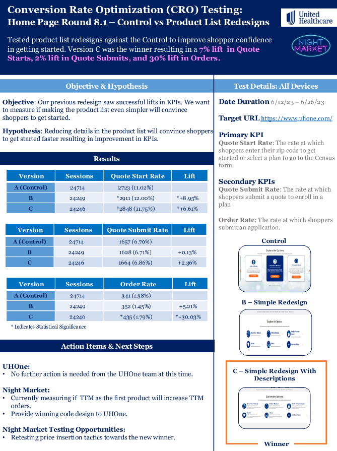
6.6% Home CTR Lift Via Product Grid Redesign
Placing more products immediately in view spoke to a broader audience and resulted in more conversions. Descriptions helped upper funnel lift matriculate down-funnel
I've worked across healthcare, retail, education and more to deliver value in a variety of ways. Explore my winning results below!


Placing more products immediately in view spoke to a broader audience and resulted in more conversions. Descriptions helped upper funnel lift matriculate down-funnel
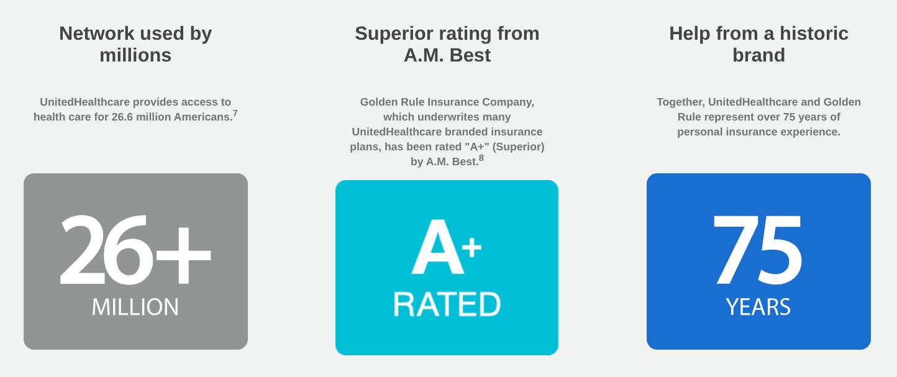
How more aesthetic design improved conversion
Opening the lead form in a new tab enabled simultaneous form fill and research, improving motivation
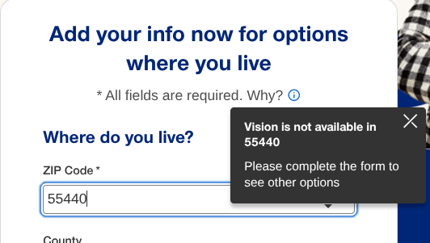
Better expectation setting increased conversions down-funnel

Simpler UI reduces overload to improve engagement
Adding a global countdown timer capitalized on genuine urgency to increase cart additions for a high margin product
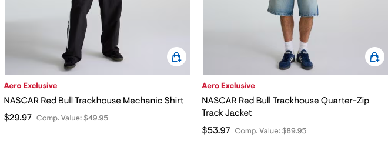
Clearer CTAs improve engagement
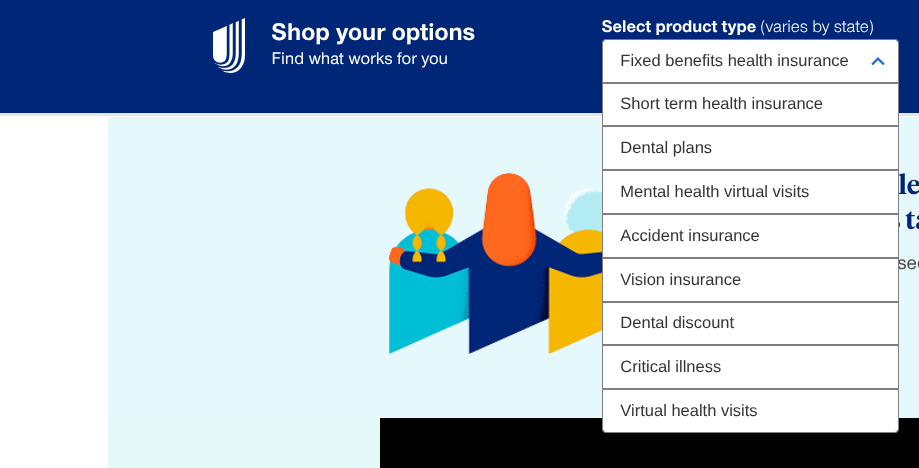
Product intent capture engages users with choice and improves down-funnel pathing and product displays
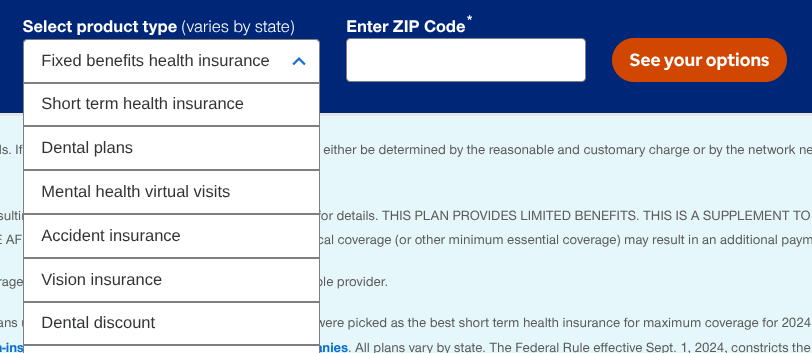
Reducing choice with a single CTA improved CTR by 2.1% globally
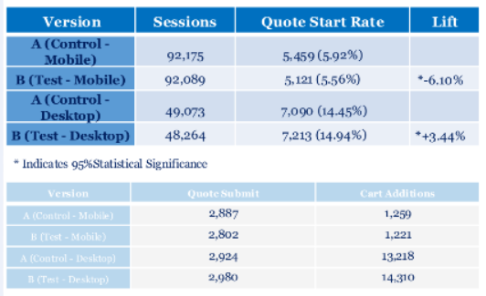
Adding a Forbes Award badge and expanding social proof with a carousel increased trust signals and drove more shoppers into the funnel on desktop
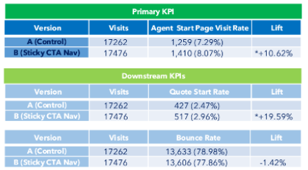
Adding conversion CTAs to the persistent global nav drove a 10.6% lift in Agent Start Page visits and a 19.6% lift in Quote Start Rate across HealthMarkets
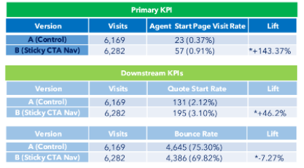
Surfacing sticky conversion CTAs on the resources section drove massive lifts in agent funnel entry and quote start rate
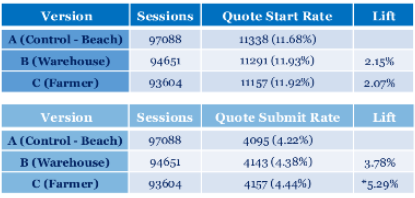
Aligning hero imagery with American customer values encouraged more shoppers to engage and enter the Census form
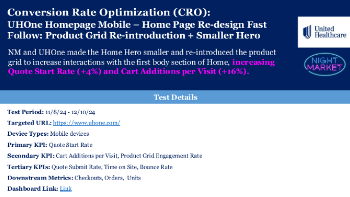
Smaller hero and a re-introduced clickable product grid on mobile drove a 4.5% Quote Start Rate lift and 16% increase in Cart Additions per visit